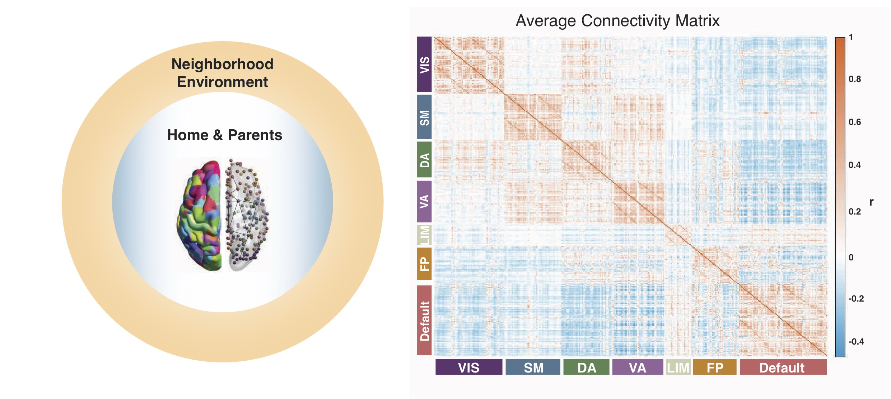

Publications

Associations between neighborhood SES and functional brain network development. Cerebral Cortex (2019). It is intuitively obvious to anyone who has watched a child turn into a teenager that our brains undergo vast changes as we grow up. But how might these changes differ for a child living in Brooklyn as compared to a child living in Detroit? Our recent work finds that intrinsic brain networks become more segregated, or clustered into subgroups, as children get older, and that the socioeconomic status (SES) of the neighborhood they live in affects this process. We found that youth living in high-SES neighborhoods show stronger age-related changes in brain network segregation than youth living in low-SES neighborhoods.
While children in high-SES neighborhoods start out with lower levels of brain network segregation, by age 22, they show higher levels of segregation than youth in low-SES neighborhoods, a pattern that is suggestive of faster brain development in the youth in high-SES neighborhoods. These effects were strongest in areas of the brain important for judgment, motivation, and both sensory and motor processing. Our findings shed light on the relationships between intrinsic brain networks and age, and on how the local environment might shape these relationships, underscoring the importance of the neighborhood during development.
Publication list
Tooley, U.A., Mackey, A. P., Ciric, R., Ruparel, K., Moore, T. M., Gur, R. C., Gur, R. E.,
Satterthwaite, T. D., Bassett, D. S. (2019) Associations between neighborhood SES and functional brain network development. Cerebral Cortex. bhz066. pdf
Tooley, U., Makhoul, Z., & Fisher, P.A. (2016) Nutritional status of foster children: implications for cognitive and behavioral development. Children and Youth Services Review, 70, 369-374. pdf
Edgin, J.O., Tooley, U., Demara, B., Nyhuis, C., Anand, P., & Spano, G. (2015) Sleep disturbance and expressive language development in preschool-age children. Child Development , 86(6), 1984-1998. pdf
In prep
Tooley, U.A. & Mackey, A.P. Developmental origins of cognitive reserve. In prep
Mahadevan, A.S., Tooley, U.A. , Bertolero, M.A., Mackey A.P., & Bassett, D.S. Evaluating the sensitivity of functional connectivity measures to motion artifact in resting-state fMRI data. In prep
PDFs are provided to ensure timely dissemination of academic work. They can be downloaded for noncommercial, information purposes only, and may not be reposted without permission from the respective copyright holders.